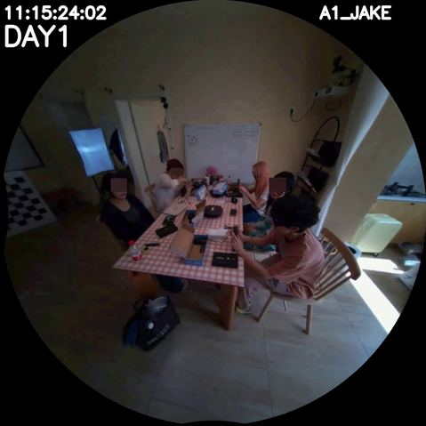
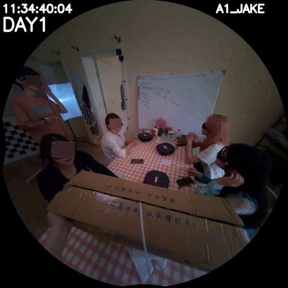
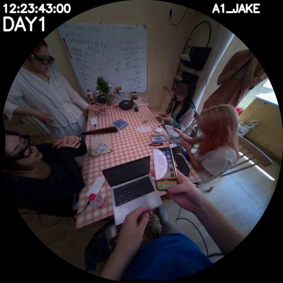
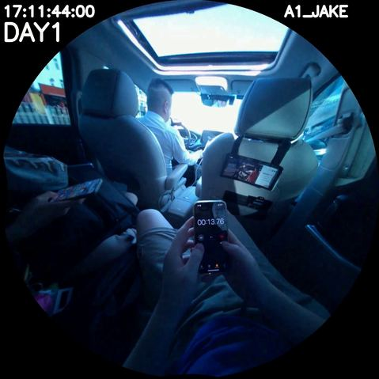
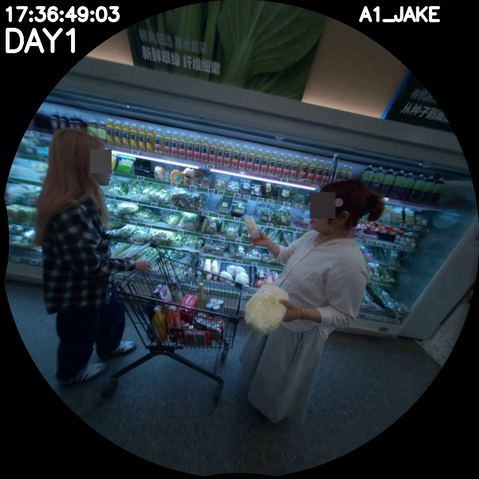

spatial retrieval · mock
SpatialMemory.retrieve(query) — same JSON, novel-view rendering
query
"I in kitchen near whiteboard"
retrieve_with_render(query, top_k=6)

GS-RENDERED
pose=median(place)
Ilocated_inkitchen

GS-RENDERED
pose=near(whiteboard)
Inearwhiteboard

GS-RENDERED
pose=contains(kitchen)
kitchencontainslight

GS-RENDERED
pose=on(table)
paper_baglocated_inkitchen

GS-RENDERED
pose=next_to(stool)
Ionstool

FRAME FALLBACK
no gsplat for supermarket
Shurelocated_insupermarket